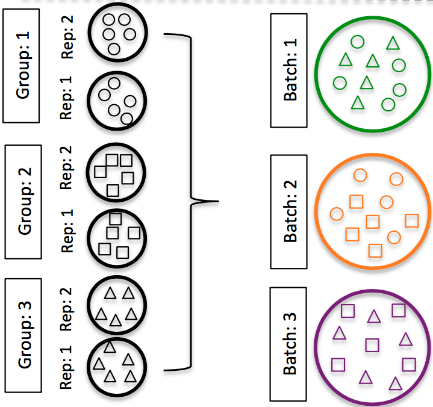

Describe the importance of replicates for RNA-seq differential expression experiments
Explain the relationship between the number of biological replicates, sequencing depth and the differentially expressed genes identified
Demonstrate how to design an RNA-seq experiment that avoids confounding and batch effects
Experimental planning considerations
Understanding the steps in the experimental process of RNA extraction and preparation of RNA-Seq libraries is helpful for designing an RNA-Seq experiment, but there are special considerations that should be highlighted that can greatly affect the quality of a differential expression analysis.
These important considerations include:
Number and type of replicates
Avoiding confounding
Addressing batch effects
We will go over each of these considerations in detail, discussing best practice and optimal design.
Replicates
Experimental replicates can be performed as technical replicates or biological replicates.
Figure 1
Technical replicates: use the same biological sample to repeat the technical or experimental steps in order to accurately measure technical variation and remove it during analysis.
Biological replicates use different biological samples of the same condition to measure the biological variation between samples.
In the days of microarrays, technical replicates were considered a necessity; however, with the current RNA-Seq technologies, technical variation is much lower than biological variation and technical replicates are unneccessary.
In contrast, biological replicates are absolutely essential for differential expression analysis. For mice or rats, this might be easy to determine what constitutes a different biological sample, but it’s a bit more difficult to determine for cell lines. This article gives some great recommendations for cell line replicates.
For differential expression analysis, the more biological replicates, the better the estimates of biological variation and the more precise our estimates of the mean expression levels. This leads to more accurate modeling of our data and identification of more differentially expressed genes.
Figure 2
As the figure above illustrates, biological replicates are of greater importance than sequencing depth, which is the total number of reads sequenced per sample. The figure shows the relationship between sequencing depth and number of replicates on the number of differentially expressed genes identified [1]. Note that an increase in the number of replicates tends to return more DE genes than increasing the sequencing depth. Therefore, generally more replicates are better than higher sequencing depth, with the caveat that higher depth is required for detection of lowly expressed DE genes and for performing isoform-level differential expression.
Sample pooling: Try to avoid pooling of individuals/experiments, if possible; however, if absolutely necessary, then each pooled set of samples would count as a single replicate. To ensure similar amounts of variation between replicates, you would want to pool the same number of individuals for each pooled set of samples.
For example, if you need at least 3 individuals to get enough material for your control replicate and at least 5 individuals to get enough material for your treatment replicate, you would pool 5 individuals for the control and 5 individuals for the treatment conditions. You would also make sure that the individuals that are pooled in both conditions are similar in sex, age, etc.
Replicates are almost always preferred to greater sequencing depth for bulk RNA-Seq. However, guidelines depend on the experiment performed and the desired analysis. Below we list some general guidelines for replicates and sequencing depth to help with experimental planning:
General gene-level differential expression:
ENCODE guidelines suggest 30 million SE reads per sample (stranded).
15 million reads per sample is often sufficient, if there are a good number of replicates (>3).
Spend money on more biological replicates, if possible.
Generally recommended to have read length >= 50 bp
Gene-level differential expression with detection of lowly-expressed genes:
Similarly benefits from replicates more than sequencing depth.
Sequence deeper with at least 30-60 million reads depending on level of expression (start with 30 million with a good number of replicates).
Generally recommended to have read length >= 50 bp
Isoform-level differential expression:
Of known isoforms, suggested to have a depth of at least 30 million reads per sample and paired-end reads.
Of novel isoforms should have more depth (> 60 million reads per sample).
Choose biological replicates over paired/deeper sequencing.
Generally recommended to have read length >= 50 bp, but longer is better as the reads will be more likely to cross exon junctions
Perform careful QC of RNA quality. Be careful to use high quality preparation methods and restrict analysis to high quality RIN # samples.
Other types of RNA analyses (intron retention, small RNA-Seq, etc.):
Different recommendations depending on the analysis.
Almost always more biological replicates are better!
NOTE: The factor used to estimate the depth of sequencing for genomes is “coverage” - how many times do the number of nucleotides sequenced “cover” the genome. This metric is not exact for genomes (whole genome sequencing), but it is good enough and is used extensively. However, the metric does not work for transcriptomes because even though you may know what % of the genome has trancriptional activity, the expression of the genes is highly variable.
Confounding
A confounded RNA-Seq experiment is one where you cannot distinguish the separate effects of two different sources of variation in the data.
For example, we know that sex has large effects on gene expression, and if all of our control mice were female and all of the treatment mice were male, then our treatment effect would be confounded by sex. We could not differentiate the effect of treatment from the effect of sex.
confounder
Figure 3
To AVOID confounding:
Ensure animals in each condition are all the same sex, age, litter, and batch, if possible.
If not possible, then ensure to split the animals equally between conditions
confounder2
Figure 4
Batch effects
Batch effects are a significant issue for RNA-Seq analyses, since you can see significant differences in expression due solely to the batch effect.
Figure 5
To explore the issues generated by poor batch study design, they are highlighted nicely in this paper.
How to know whether you have batches?
Were all RNA isolations performed on the same day?
Were all library preparations performed on the same day?
Did the same person perform the RNA isolation/library preparation for all samples?
Did you use the same reagents for all samples?
Did you perform the RNA isolation/library preparation in the same location?
If any of the answers is ‘No’, then you have batches.
Best practices regarding batches:
Design the experiment in a way to avoid batches, if possible.
If unable to avoid batches:
Do NOT confound your experiment by batch:
Figure 6
DO split replicates of the different sample groups across batches. The more replicates the better (definitely more than 2).

Figure 7
DO include batch information in your experimental metadata. During the analysis, we can regress out the variation due to batch if not confounded so it doesn’t affect our results if we have that information.
batch4
Figure 8
NOTE:The sample preparation of cell line “biological” replicates “should be performed as independently as possible” (as batches), “meaning that cell culture media should be prepared freshly for each experiment, different frozen cell stocks and growth factor batches, etc. should be used [2].” However, preparation across all conditions should be performed at the same time.
Exercise
Your experiment has three different treatment groups, A, B, and C. Due to the lengthy process of tissue extraction, you can only isolate the RNA from two samples at the same time. You plan to have 4 replicates per group.
Fill in the RNA isolation column of the metadata table. Since we can only prepare 2 samples at a time and we have 12 samples total, you will need to isolate RNA in 6 batches. In the RNA isolation column, enter one of the following values for each sample: group1, group2, group3, group4, group5, group6. Make sure to fill in the table so as to avoid confounding by batch of RNA isolation.
Click here to download the below table as an Excel file.
BONUS: To perform the RNA isolations more quickly, you devote two researchers to perform the RNA isolations. Create a researcher column and fill in the researchers’ initials for the samples they will prepare: use initials AB or CD.
metadata <-data.frame(sample =paste0("sample", 1:12),treatment =rep(c("A", "B", "C"), each =4),sex =rep(c("F", "F", "M", "M"), times =3),replicate =rep(1:4, times =3)) %>%mutate(across(treatment:replicate,as.factor))metadata
sample treatment sex replicate
1 sample1 A F 1
2 sample2 A F 2
3 sample3 A M 3
4 sample4 A M 4
5 sample5 B F 1
6 sample6 B F 2
7 sample7 B M 3
8 sample8 B M 4
9 sample9 C F 1
10 sample10 C F 2
11 sample11 C M 3
12 sample12 C M 4
Fill in the RNA isolation column of the metadata table. Since we can only prepare 2 samples at a time and we have 12 samples total, you will need to isolate RNA in 6 batches. In the RNA isolation column, enter one of the following values for each sample: group1, group2, group3, group4, group5, group6. Make sure to fill in the table so as to avoid confounding by batch of RNA isolation.
sample treatment sex replicate batch
1 sample1 A F 1 1
2 sample2 A F 2 2
3 sample3 A M 3 3
4 sample4 A M 4 4
5 sample5 B F 1 5
6 sample6 B F 2 6
7 sample7 B M 3 1
8 sample8 B M 4 2
9 sample9 C F 1 3
10 sample10 C F 2 4
11 sample11 C M 3 5
12 sample12 C M 4 6
X3 <-model.matrix(~ treatment + sex + batch,data = metadata_test01)X3
Notice the difference adding a non correct design. We can see that 9 + 7 + 5 is equal to 4
metadata_test_wrong <- metadata %>%mutate(batch =c(1,1,2,2,3,3,4,4,5,5,6,6)) %>%mutate(across(treatment:batch,as.factor))# print the metadata tablemetadata_test_wrong
sample treatment sex replicate batch
1 sample1 A F 1 1
2 sample2 A F 2 1
3 sample3 A M 3 2
4 sample4 A M 4 2
5 sample5 B F 1 3
6 sample6 B F 2 3
7 sample7 B M 3 4
8 sample8 B M 4 4
9 sample9 C F 1 5
10 sample10 C F 2 5
11 sample11 C M 3 6
12 sample12 C M 4 6
X_wrong <-model.matrix(~ treatment + sex + batch,data = metadata_test_wrong)X_wrong
# confirm the rank is lower than the sizedim(X_wrong)
[1] 12 9
qr(X_wrong)$rank
[1] 6
Test if the matrix is co-linear in the correct desing
dim(X3)
[1] 12 9
qr(X3)$rank
[1] 9
Check the distribution of the treaments per batch and gender
# treatment by batchmetadata_test01 %>%group_by(treatment,batch) %>%summarise(n =n())
`summarise()` has grouped output by 'treatment'. You can override using the
`.groups` argument.
# A tibble: 12 × 3
# Groups: treatment [3]
treatment batch n
<fct> <fct> <int>
1 A 1 1
2 A 2 1
3 A 3 1
4 A 4 1
5 B 1 1
6 B 2 1
7 B 5 1
8 B 6 1
9 C 3 1
10 C 4 1
11 C 5 1
12 C 6 1
# sex by batchmetadata_test01 %>%group_by(sex,batch) %>%summarise(n =n())
`summarise()` has grouped output by 'sex'. You can override using the `.groups`
argument.
# A tibble: 12 × 3
# Groups: sex [2]
sex batch n
<fct> <fct> <int>
1 F 1 1
2 F 2 1
3 F 3 1
4 F 4 1
5 F 5 1
6 F 6 1
7 M 1 1
8 M 2 1
9 M 3 1
10 M 4 1
11 M 5 1
12 M 6 1
# sex by treatmentmetadata_test01 %>%group_by(sex,treatment) %>%summarise(n =n())
`summarise()` has grouped output by 'sex'. You can override using the `.groups`
argument.
# A tibble: 6 × 3
# Groups: sex [2]
sex treatment n
<fct> <fct> <int>
1 F A 2
2 F B 2
3 F C 2
4 M A 2
5 M B 2
6 M C 2
test 02
BONUS: To perform the RNA isolations more quickly, you devote two researchers to perform the RNA isolations. Create a researcher column and fill in the researchers’ initials for the samples they will prepare: use initials AB or CD.
metadata_test02 <- metadata_test01 %>%mutate(user =c(1,2,1,2,1,2,2,1,2,1,2,1)) %>%mutate(across(treatment:user,as.factor))# print the metadatametadata_test02
sample treatment sex replicate batch user
1 sample1 A F 1 1 1
2 sample2 A F 2 2 2
3 sample3 A M 3 3 1
4 sample4 A M 4 4 2
5 sample5 B F 1 5 1
6 sample6 B F 2 6 2
7 sample7 B M 3 1 2
8 sample8 B M 4 2 1
9 sample9 C F 1 3 2
10 sample10 C F 2 4 1
11 sample11 C M 3 5 2
12 sample12 C M 4 6 1
# solution provided by the authorsmetadata_solution <-data.frame(sample =paste0("sample", 1:12),treatment =rep(c("A", "B", "C"), each =4),sex =rep(c("F", "M"), each =2, times =3),replicate =rep(1:4, times =3),`batch`=c("group1", "group2", "group3", "group4", "group3", "group5", "group1", "group6", "group4", "group6", "group2", "group5"),user =c("AB", "CD", "AB", "CD", "AB", "CD", "AB", "CD", "CD", "AB", "CD", "AB"),stringsAsFactors =FALSE, # Good practice to avoid factors by defaultcheck.names =FALSE# Allows the space in "RNA isolation")# Print the resulting tablemetadata_solution
sample treatment sex replicate batch user
1 sample1 A F 1 group1 AB
2 sample2 A F 2 group2 CD
3 sample3 A M 3 group3 AB
4 sample4 A M 4 group4 CD
5 sample5 B F 1 group3 AB
6 sample6 B F 2 group5 CD
7 sample7 B M 3 group1 AB
8 sample8 B M 4 group6 CD
9 sample9 C F 1 group4 CD
10 sample10 C F 2 group6 AB
11 sample11 C M 3 group2 CD
12 sample12 C M 4 group5 AB